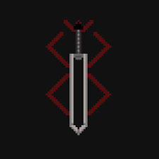

In this world, is the destiny of mankind controlled by some transcendental entity or law? Is it like the hand of God hovering above? At least it is true that man has no control; even over his own will.

In this world, is the destiny of mankind controlled by some transcendental entity or law? Is it like the hand of God hovering above? At least it is true that man has no control; even over his own will.
Guts, famously known as The Black Swordsman, is the main protagonist of the Berserk franchise. Guts is a former mercenary and branded wanderer that travels the world in a constant internal struggle between exacting revenge on Griffith and the Godhand and protecting those dear to him.
Extraordinarily handsome, charismatic, and skilled, Griffith is the leader of the mercenary group the Band of the Hawk. After meeting Guts, Griffith defeats him in battle and forces him to join the Band of the Hawk as the latter proclaims he now "owns" him.
Casca, formerly known by her alias Elaine, is the deuteragonist of the Berserk franchise. She was a member of the Band of the Hawk with Griffith being her leader. Later on, the band recruited a mercenary named Guts who she resentful towards later falling in love with him.
Each man longs to pursue his dream. Each man is tortured by this dream, but the dream gives meaning to his life. Even if the dream ruins his life, man cannot allow himself to leave it behind. In this world, is man ever able to possess anything more solid, than a dream?
-Kentaro Miura
Ready to dive deeper into their story?
